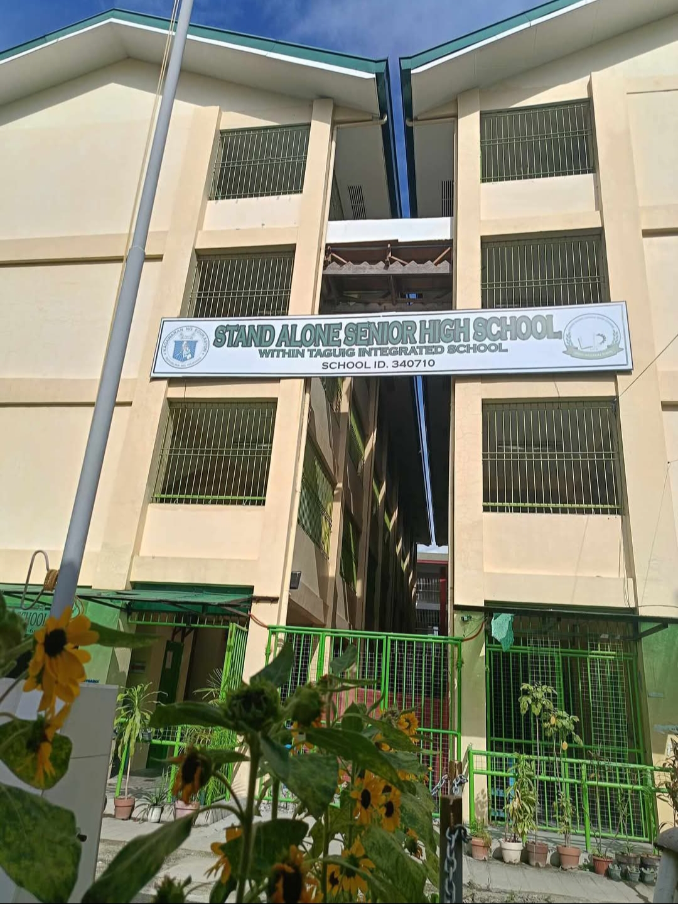
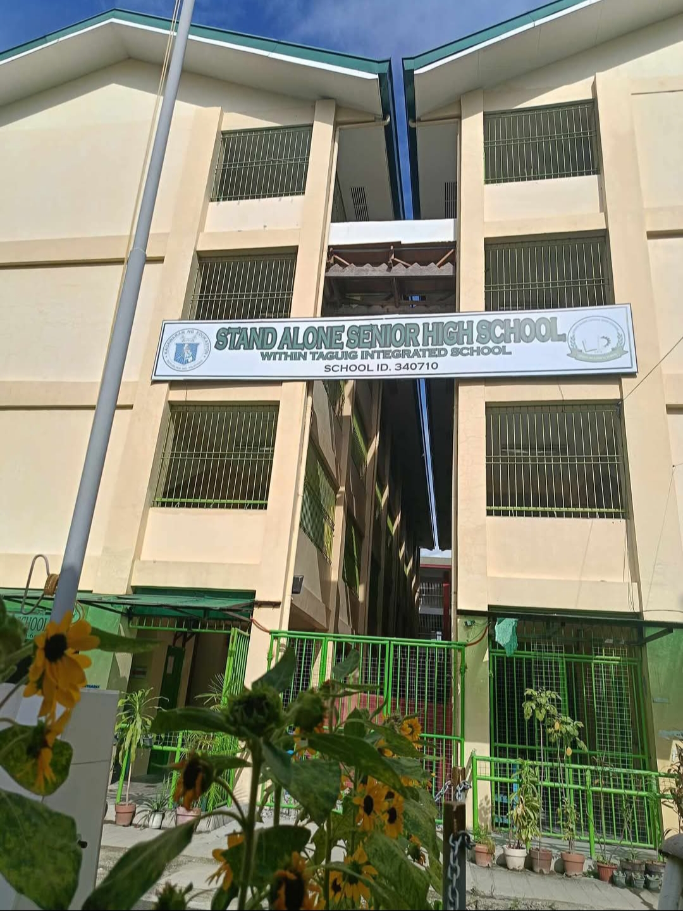

STAND ALONE SENIOR HIGHSCHOOL
ACTIVITY
GALLERY
 


DESCRIPTION
The Stand Alone Senior High School (SHS) within Taguig Integrated School is a public school that exclusively offers Senior High School Grades (11 and 12)
and is situated on a separate site from the Junior High School (JHS) or Integrated School,
with its own School Head. It's part of the Taguig Integrated School, but operates independently with its own facilities and administration.
(ORACION RAINIELL F.)
(11-INDUSTRY)